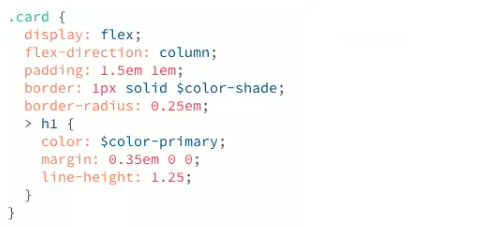

Variables (back to top)
A core Sass feature that provides a way of storing and keeping track of information. Useful for colours etc as you can declare once and if you then want to change your colour scheme, you can change in one place rather than everywhere. Also useful for font stacks and other reuseable features.
- $variable-name: » declare the variable at the beginning of the Sass file.
e.g.
- $color-primary: #278da4;
- $color-text: #343434;
- $font-stack: 'Roboto', sans-serif;
- $margin: 50px;
Then use them within your CSS:
color: $color-text;
background: $color-primary;
margin-top: $margin;
font-family: $font-stack;
Nested Selectors (back to top)
Descendent selectors can become confusing, Sass allows you to nest the descendent inside the parent. It will then output the descendent selector in the CSS.
There is no limit to the number of nests but try and keep it to a minimum or you could get "code bloat".
BE AS SPECIFIC AS YOU NEED TO BE, BUT DON'T OVERDO IT!
Sass code:

You can use the combinators in the nesting too, e.g. preface the nested item with > for direct child. See CSS Selectors for more details. (Opens in a new tab.)
Sass code:

Ampersand Selector (back to top)
When nesting the compiler places a space between the first selector and the nested selector. So if you need the two selectors to abut, such as in hyphenated selector names or pseudos classes, you can use the ampersand (&) which serves as a parent selector reference.
Sass code:
You can also use ampersand (&) after a selector to target the parent within a different selector.
Sass code:
-

Mixins (back to top)
Mixins are one of the most used features of Sass and allows you to write blocks of code that can be reused when items use the same properties.
- Declare the mixin using
- Use the mixin using
You can also use ampersand (&) after a selector to target the parent within a different selector.
Sass code:
-